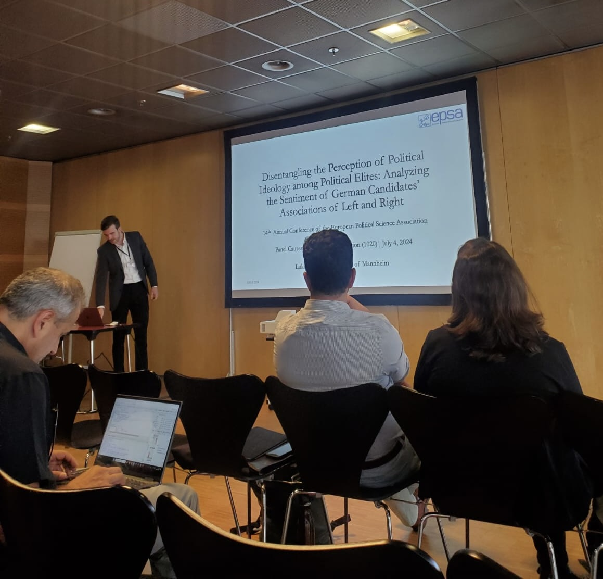

Projects, Publications and Ongoing Work

Research Papers
Dissertation
Abstract: The terms left and right are essential poles in the context of political ideology. Their meanings and understandings vary across contexts, affecting political communication, discourse, representation and polarisation dynamics. We know less about how different meanings and understandings manifest themselves beyond differential usage of the left-right scale. Building on this research gap, I measure how associations with left and right systematically vary across different political positions. I present a novel theoretical two-dimensional model distinguishing between left- and right-leaning individuals and their associations with left and right. In doing so, I propose ‘in-ideology’ (alignment with one’s political leanings) and ‘out-ideology’ (opposition to one’s leanings) as a theoretical foundation to understand diverging associations. Using data from German GLES candidate studies (2013, 2017, 2021), I introduce a methodological framework that maps left-right word associations from open-ended survey responses into a semantic space, combining these with political positions to reflect the in- and out-ideology dichotomy. The findings reveal substantive differences based on left-right positions, manifested in associations with positive connotations for in-ideology – for example, justice (left) and patriotism (right) – and negative connotations for out-ideology – for example, racism (right) and socialism (left). The model’s applicability is demonstrated in scaling parliamentary speeches and is reliable across different model specifications in terms of construct and external validity. The study advances the understanding of ideological associations and their role in political research by highlighting the importance of distinguishing between in- and out-ideology in explaining ideological language across the political spectrum.
Abstract: Political ideology is a fundamental aspect of politics and a well-researched area of political science, but difficult to measure. By examining the sentiment of political elites’ associations with ‘left’ and ‘right’, this study shows the direction and extent of elites’ attitudes – measured by sentiment analysis – towards ideology by analysing three waves of German Bundestag election candidate surveys (2013, 2017 and 2021). The results show that there is an asymmetry in attitudes towards political ideology among German candidates. Centre-left and left-wing candidates consistently view left ideology positively and right ideology negatively. Compared to left-leaning candidates, right-leaning candidates, except the far-right AfD in 2017 and 2021, have less positive attitudes towards right ideology and less negative attitudes towards left ideology. A key implication is that the left–right continuum may need to be partially reconsidered or reconceptualised, as elite attitudes towards ideological poles can significantly shape political behaviour, communication, and representation.
Beyond
Abstract: Open Discourse is a comprehensive project that processes every word spoken in the German Bundestag’s parliamentary sessions into a machine-readable format, encompassing nearly 900,000 speeches from 1949 to 2022. This paper introduces the database, comparing it to other parliamentary text corpora projects and highlighting its potential for political research through modern quantitative text analysis and political science research frameworks.
Software Projects

- Building on the ParlGov database, ParlGov Dashboard is an R Shiny App that offers comprehensive information on political parties, elections, and cabinets. This dashboard allows for the viewing and downloading of detailed visualizations and tables, with the source code available on GitHub.

- This R package provides functions for descriptive statistics and various analyses using the Open Discourse database. The package offers functions to plot and analyze the data descriptively. The source code is available on GitHub.